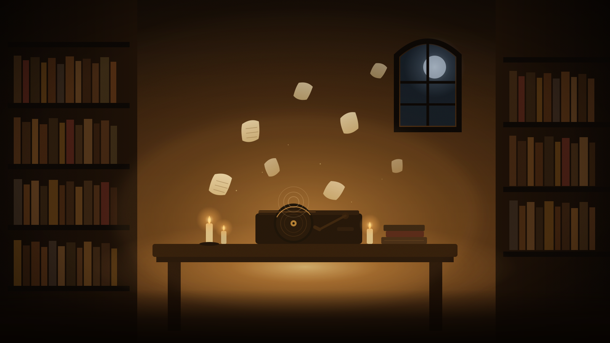
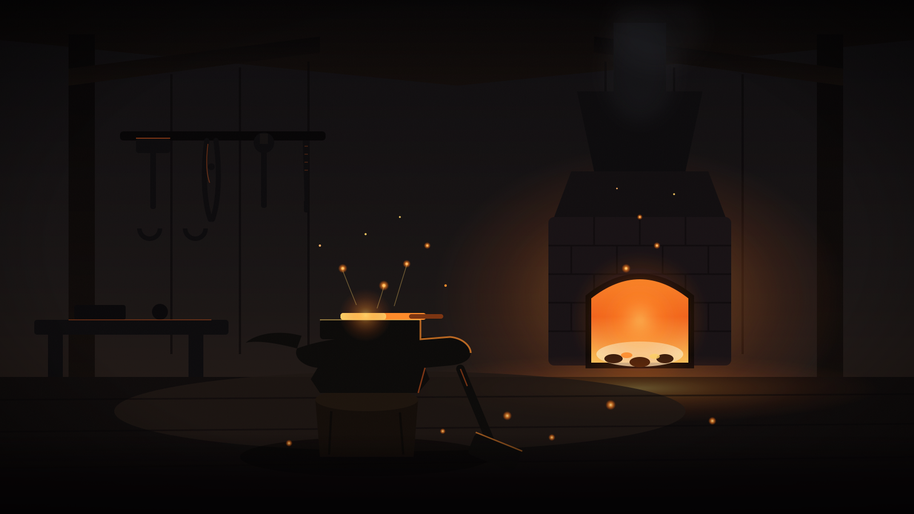
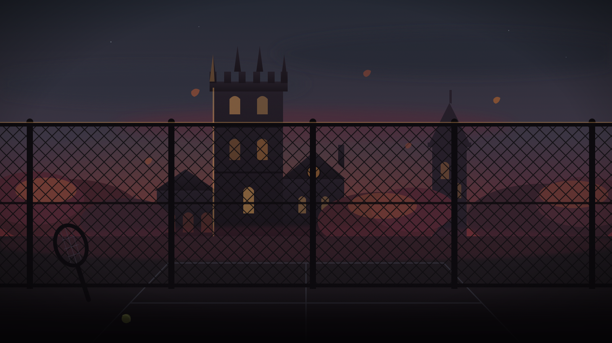

Quest Log
Slay the pipeline dragon before quarter’s end. Reward: 1,250 XP and the Ledger of Truth. The parchment mottling should sit quietly behind ink-dark text.
Procedural feTurbulence texture tiles and painterly-lite zone backdrops for the wow-character-select mockup. All art original.
#tex-parchment — aged parchment
#tex-leather — dark tooled leather
#tex-stone — dark carved stone
#tex-nightsky — green-teal night haze
#tex-embers — dark ground with embers
Quest Log
Slay the pipeline dragon before quarter’s end. Reward: 1,250 XP and the Ledger of Truth. The parchment mottling should sit quietly behind ink-dark text.
Character Sheet
Dark tooled leather for UI panel fills — grain and vignette should stay subtle beneath gold headings and slate body text.
Achievements
Carved stone for header bars. The chisel lines top and bottom read as bevels when the tile is stretched wide and short.
World Map
Deep green-teal night haze with faint stars — a quiet backdrop wash for full-bleed sections behind the scene art.
Campfire Footer
Dark ground with scattered glowing ember specks, for footers and the strip beneath the campfire scene.

Nick’s RecordsCandle-lit study — warm amber on deep brown, bookshelf walls, floating pages, record player under a moonlit arch.
The ForgeNight workshop — ember orange on charcoal, glowing hearth, rim-lit anvil with hot iron, sparks rising.
Hyde ParkCollegiate gothic towers at autumn dusk — maroon and slate, chain-link fence silhouette, racquet at rest.